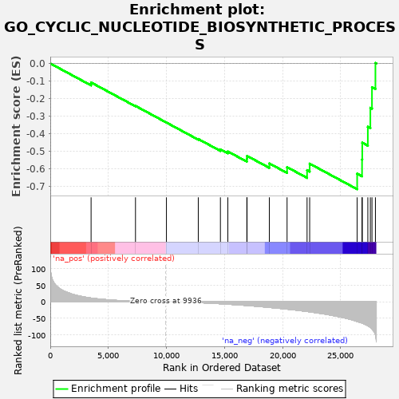

| | | Dataset | PRAD |
| Phenotype | NoPhenotypeAvailable |
| Upregulated in class | na_neg |
| GeneSet | GO_CYCLIC_NUCLEOTIDE_BIOSYNTHETIC_PROCESS |
| Enrichment Score (ES) | -0.7173872 |
| Normalized Enrichment Score (NES) | -1.6146454 |
| Nominal p-value | 0.008055236 |
| FDR q-value | 0.026095303 |
| FWER p-Value | 0.913 |
Table: GSEA Results Summary

Fig 1: Enrichment plot: GO_CYCLIC_NUCLEOTIDE_BIOSYNTHETIC_PROCESS
Profile of the Running ES Score & Positions of GeneSet Members on the Rank Ordered List
| PROBE | GENE SYMBOL | GENE_TITLE | RANK IN GENE LIST | RANK METRIC SCORE | RUNNING ES | CORE ENRICHMENT | | 1 | GUCY2D | | | 3514 | 11.212 | -0.1084 | No |
| 2 | ADCY1 | | | 7338 | 1.613 | -0.2423 | No |
| 3 | GUCY2C | | | 10003 | -0.012 | -0.3372 | No |
| 4 | ADCY10 | | | 12745 | -2.551 | -0.4311 | No |
| 5 | ADCY8 | | | 14651 | -5.848 | -0.4902 | No |
| 6 | ADCY6 | | | 15292 | -7.221 | -0.5022 | No |
| 7 | GUCY1A2 | | | 16927 | -11.180 | -0.5436 | No |
| 8 | NPPC | | | 16946 | -11.223 | -0.5274 | No |
| 9 | ADCY2 | | | 18864 | -16.939 | -0.5704 | No |
| 10 | ADCY7 | | | 20391 | -22.118 | -0.5916 | No |
| 11 | NPPB | | | 22113 | -29.207 | -0.6091 | No |
| 12 | ADCY9 | | | 22337 | -30.243 | -0.5717 | No |
| 13 | AMPD2 | | | 26426 | -59.093 | -0.6288 | Yes |
| 14 | ADCY5 | | | 26847 | -64.037 | -0.5477 | Yes |
| 15 | NPR1 | | | 26866 | -64.257 | -0.4520 | Yes |
| 16 | NPPA | | | 27345 | -71.842 | -0.3612 | Yes |
| 17 | ADCY3 | | | 27562 | -77.188 | -0.2532 | Yes |
| 18 | ADCY4 | | | 27702 | -81.903 | -0.1353 | Yes |
| 19 | NPR2 | | | 27999 | -99.068 | 0.0027 | Yes |
Table: GSEA details [plain text format]
Fig 2: GO_CYCLIC_NUCLEOTIDE_BIOSYNTHETIC_PROCESS: Random ES distribution
Gene set null distribution of ES for GO_CYCLIC_NUCLEOTIDE_BIOSYNTHETIC_PROCESS